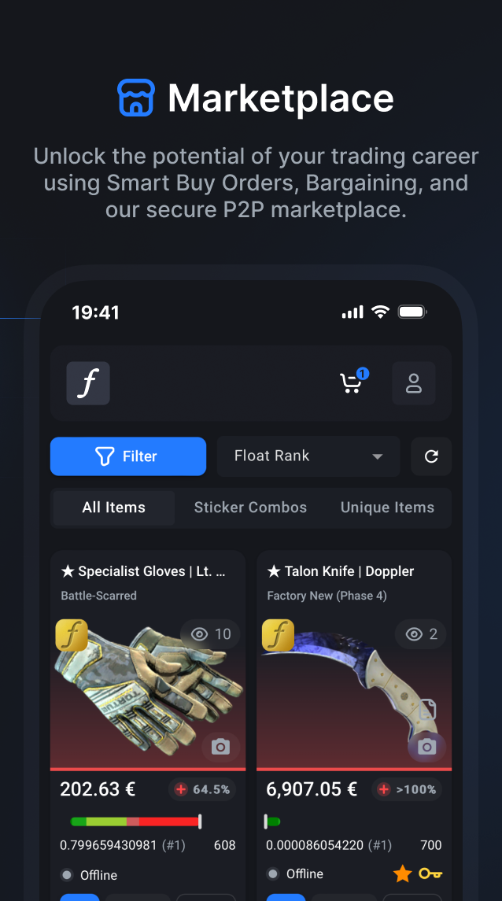

CSFloat 陪了我这大半年：从蹲货新手到佛系卖家的真实感受
装它到现在快七个月了，从蹲第一件刀的新手到现在偶尔出点零碎饰品，说点时间沉淀下来的真实感受——哪些当初觉得烦的现在离不开，哪些吹上天的我碰都没碰。
当初为什么装它
说实话不是我主动找的。群里几个常聊 CS2 的老玩家在讨论蹲一件红蝴蝶的时候提到了这个平台，说 Steam 市场上 Float 数据要自己拉，这个平台直接把品相印在卡片上，能省不少事。我那时候刚入坑饰品交易三个月，在 Steam 市场上吃过几次浮点不准的亏，就顺手从官方下载拿了一个装了。
CSFloat官网入口挺直接，注册完连 Steam 账号就能用，没什么门槛。第一次打开移动端 App 的时候，界面上密密麻麻的筛选器让我有点懵——类型、浮点范围、模板、排名、卖家在线状态，每个都能单独设条件。那时候我还不知道这些条件以后会变成每天点开的第一屏。
越用越顺手的几件事
先说最实打实的：P2P 交付的硬时限规则。Steam 市场买东西是跟 Steam 结算，CSFloat 是你付款到平台托管，卖家接单后两小时内给你发交易报价。我第一次买的时候还在担心卖家会不会跑路，结果界面上明明白白写着「30 分钟不接单可以取消」，「2 小时没报价自动退」——后来去CSFloat文档翻了一下才知道这套时限是写死在流程里的，不是卖家良心。
这种制度设计带来的踏实感是 Steam 市场没有的。我遇到过一次卖家接单后失联，等了 25 分钟系统自动取消，钱原路退回，前后没超过半小时。换在 Steam 上可能就是一顿扯皮。
移动端的搜索和推送组合也是越用越香。设置好目标款式的条件推送之后，手机一响就知道有新货上架。推送里直接带浮点和价格，不用再一个个翻列表。

以前在 Steam 市场蹲货要开三个浏览器标签，现在手机端一个推送加高级搜索就能搞定。卡片上直接显示卖家在线状态——左下角有个绿点就是在线，点下去接单肯定快，这个小细节当初没注意，现在成了我挑货的第一筛选项。
还有个没料到的：FloatDB 数据库。我当初以为就是个市场，没想到内置了一个超十亿件皮肤的索引库。想买某款蝴蝶刀，直接进数据库搜款式，按浮点排名筛一遍就能看到全网最低价的历史成交——这个功能让我从瞎蒙价格到能大概判断什么价位算合理。
越用越烦的几件事
也说点真心话。充值款不能提现这条规则我当初注册的时候完全没注意，等我卖了几件饰品赚了点钱、又充了一笔想凑起来一起提的时候，才发现系统明确区分了「销售收入」和「充值款」——充值进来的钱永远只能购物，提不出来。
官方解释说是防洗钱，逻辑上我能理解，但实操上确实让人不爽。我后来养成了一个习惯：先小额卖出拿到可提余额，再按需充值，绝不充超过能花掉的数。
然后是API 限流。我自己写了个简单的价格监控脚本，用平台的公开 API 定时拉 listings，结果跑了三天就被 429 了。降了频率加了退避重试才稳定下来，但一开始那段时间反复被限流挺烦的——平台的 API 文档里虽然写了控制频率，但没说具体阈值多少，只能自己试错。
还有个小抱怨：卖家不接单的情况还是会碰到。虽然 30 分钟时限能自动取消，但我有时候赶时间想快速入手，等个 25 分钟再取消再找下一家，这中间的时间成本也是钱。现在养成了先看卖家在线状态再下单的习惯，能筛掉大部分慢的。

碰都没碰的几个功能
拍卖模式。我试过挂过一次，设了起拍价和截止时间，结果流拍了。后来想了想，自己手上的饰品不够稀有，拍卖主要是给那种限量款或者顶级浮点用的，普通东西挂一口价卖得更快。
议价功能也没怎么用。平台有议价报价（bargain offers），就是你给卖家出个低价等他回。我试过几次，大部分卖家要么不回要么直接拒绝，不如找个价格能接受的一口价直接买。
KYC 认证以外的那些高级账户设置，我到现在都没碰。什么提现费率阶梯、账户间转账规则这些，只在卖得多了才需要关注——我目前还是小打小闹的状态。
观感修正：当初高估和低估的
说个反直觉的。我当初以为 CSFloat 就是个「看浮点数据的 Steam 市场替代品」，本质还是个工具。现在七个月下来，发现它的生态比我想的完整得多——有 App、有网页端、有浏览器扩展、有 API、还有个数据库。更重要的是它把交易流程里的几个模糊环节硬编码成了清晰的时限规则，这一点在 Steam 市场上完全是盲区。
当初高估了它的差异化价值，以为能找到别的平台做不到的事情；实际上核心功能在 Steam 市场和其他饰品平台上或多或少都有，CSFloat 的优势就是把这些做得更细致、更聚焦。
当初低估了制度设计的重要性——30 分钟接单时限、2 小时发货时限、8 天放款保护期，这些不是噱头，是真能让人放心交易的底层保障。现在让我回去 Steam 市场买饰品，我反而会有点不踏实。
去留结论
短期内应该不会卸载。对我这种偶尔蹲几件货、手上有些零散饰品想出的玩家来说，它的核心价值——移动端推送、品相验货、P2P 交付保障——目前没有更好的替代品。
什么信号出现我会换平台？如果哪次碰到卖家超时系统没按时限取消、或者 API 限流变得不可理喻、或者充值规则改得更苛刻，那大概就是换的时候了。但就现在的状况来看，再陪我一段时间应该没问题。
对了，还有个小经验想分享给新入坑的朋友：先小额卖出一笔熟悉流程，再考虑充值。充值进来的钱是真提不出来，别像我当初那样踩坑。我整理的一些常用操作笔记在GitHub、Gitee、GitCode三处都有同步，需要的朋友可以翻一翻。